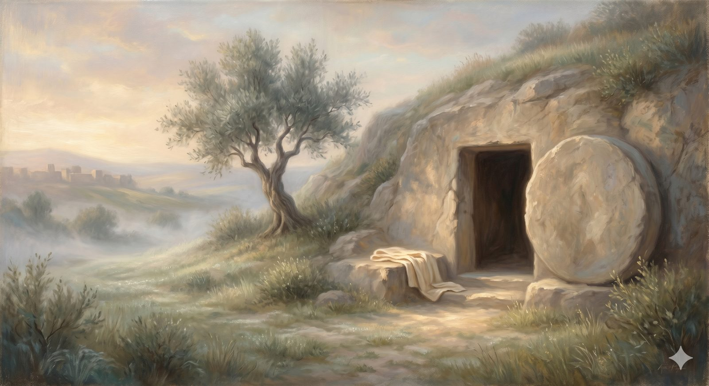

The Empty Tomb
The room where the one load-bearing fact is set in the middle and weighed — the empty tomb, the witnesses, and the explanation that accounts for them all.
"If Christ has not been raised, your faith is futile and you are still in your sins... But in fact Christ has been raised from the dead, the firstfruits of those who have fallen asleep." 1 Corinthians 15:17, 20 (ESV)
The Interpreter leads his guest into a second room, and here the exhibits narrow to a single point — because everything the first room gathered was leading here. The Christian faith does not rest on its ethics, its beauty, or even its honesty about human failure. It rests on one disputed claim about one weekend in history: that a man who was publicly executed was, three days later, alive again. Paul says it without hedging — if Christ has not been raised, the whole thing is futile, and we are still in our sins. This is the load-bearing fact. So the Interpreter does not soften it; he sets it in the middle of the room and asks the pilgrim to reckon with it.
And reckoning, here, does not mean working up a feeling. It means asking the ordinary historian's question about a set of facts that even many skeptical scholars grant: what actually explains all of this at once?
What needs explainingFive things, not one
The resurrection is best approached not as a single marvel to be swallowed, but as the one explanation that has to account for several stubborn facts together. Take them one at a time.
The empty tomb. Notice how the earliest opponents of the movement responded. They did not say "the tomb is still occupied — go and look." According to the record, they said the disciples had stolen the body. That counter-story only makes sense if the body was gone; you do not explain away a corpse that is still lying there. Every party to the ancient dispute, friend and foe, seems to have agreed on the emptiness — they disagreed only about why.
The appearances. Within about twenty-five years of the crucifixion — a blink, by the standards of ancient history — Paul writes down a list of witnesses to the risen Jesus, including a crowd of more than five hundred people, most of whom, he notes pointedly, are still alive. That is not the careful language of a legend built after all the witnesses have conveniently died. It is closer to a challenge: go and ask them.
The disciples' transformation. People do not willingly die for what they know to be a lie. At the arrest, the disciples scattered, and Peter denied even knowing Jesus. Within weeks, those same broken men were proclaiming the resurrection publicly, in the very city where it had happened, in front of people who had watched the execution, at a cost that for most of them ended in martyrdom. Something happened between the scattering and the preaching that has to be explained.
The conversion of Paul. Saul of Tarsus was not a wavering inquirer ready to be nudged. He was the movement's most energetic persecutor, overseeing arrests, certain the new sect was a blasphemy to be stamped out. "He weighed the evidence and changed his mind" does not fit that man. His own explanation, repeated and unwavering, is that he met the risen Jesus on the road and could not un-meet him.
The conversion of James. Jesus' own brother was, during the ministry, a skeptic — the Gospels say plainly that his brothers did not believe in him. After the resurrection, James became a leader of the Jerusalem church and died a martyr for it. The most economical explanation is the one he gave: he saw his brother alive.
In plain terms
The case for the resurrection isn't "here is one miracle, believe it." It's "here are five facts most historians accept — an empty tomb, mass appearances, terrified men transformed, a persecutor and a skeptic both flipped — and every non-resurrection theory can explain some of them but not all of them at once."
Weighing the alternativesEach theory leaves something out
The honest way to test a claim is to line up the competing explanations and see which accounts for the most evidence with the fewest holes. The historian N. T. Wright, in the largest scholarly treatment of the question, argues that the usual alternatives each fail at a different point. Hallucination cannot produce an empty tomb — visions do not vacate graves, and groups of five hundred do not share one. Theft cannot explain why the thieves would then die, one after another, for a body they knew they had hidden. The wrong-tomb theory was never floated by the ancient critics who could simply have walked to the right one. A purely spiritual resurrection, with the body left behind, cannot explain why the tomb was empty or why the opponents needed a theft story at all.
📖 The Scripture behind this Directwhat’s this?›
The claim: The resurrection Scripture proclaims is bodily and physical — an empty tomb and a Jesus who could be touched and who ate — not merely a spiritual survival or a vision.
- Luke 24:39 (ESV) — “See my hands and my feet, that it is I myself. Touch me, and see. For a spirit does not have flesh and bones as you see that I have.”The risen Christ explicitly contrasts himself with a mere spirit — he has flesh and bones.
- John 20:27 (ESV) — “Put your finger here, and see my hands; and put out your hand, and place it in my side.”Physical, examinable wounds — a body, not an apparition.
- 1 Corinthians 15:3–4 (ESV) — “that Christ died … that he was buried, that he was raised on the third day.”Burial and being raised are set side by side: what was buried is what was raised.
Stated directly and emphatically in the resurrection accounts and Paul's creed; the bodily nature is explicit, not derived.
The point is not that doubt becomes impossible — a determined skeptic can always hold out for an explanation not yet imagined. The point is that the bodily resurrection is the hypothesis that quietly accounts for all the data at once, while each rival accounts for only part. That is precisely the judgment historians make in every other case: the best explanation is the one that leaves the least unexplained.
Every alternative explains some of the facts. Only one explains all of them — and it is the one the witnesses gave.
Why it is the hingeNot a postscript to the cross
It remains to say why this matters so much that Paul stakes everything on it. The resurrection is not a happy epilogue tacked onto the cross. It is the Father's verdict on the cross — his public declaration that the death of Jesus accomplished exactly what it claimed. A crucified messiah who stays dead is a tragedy and a failed cause. A crucified messiah who rises is something else entirely: the announcement that sin has been paid for, that death has been beaten on its own ground, and that a new creation has broken into the middle of the old one. The empty tomb the pilgrim saw beside the Cross was the first crack of that morning. This room simply asks him to consider that the crack is real.
The Interpreter, having shown his guest the documents and the central fact they report, sends him back to the road. The evidence has done its proper work — not to compel, but to clear the way, so that when the pilgrim comes to the Cross itself, he comes with open eyes. And the Cross is exactly where the road leads next.